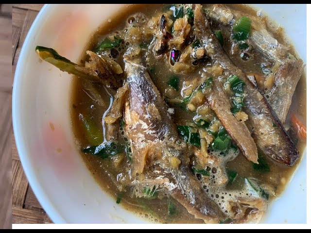

Nakham Bitchi

Ingredients
- 1 whole chicken (1.5-2 kg), cut into medium-sized pieces
- 2 medium-sized onions, chopped
- 3-4 cloves garlic, minced
- 2 medium-sized ginger, chopped
- 2-3 green chilies, chopped
- 1 tablespoon mustard oil
- 1 teaspoon ground black pepper
- Salt, to taste
- 4-5 cups water
- Fresh cilantro, for garnish
For the nakham (fermented fish paste):
- 1 cup fermented fish paste (available at local markets or online)
- 2 cloves garlic, minced
- 1 tablespoon mustard oil
- Salt, to taste
Steps
- Prepare the nakham: Mix the fermented fish paste, minced garlic, and mustard oil in a bowl. Season with salt to taste. Set aside.
- Make the soup: Heat mustard oil in a large pot over medium heat. Add the chopped onions and sauté until translucent. Add the minced garlic and chopped ginger and sauté for another minute.
- Add chicken and spices: Add the chicken pieces, ground black pepper, and salt to the pot. Mix well.
- Add water and simmer: Add 4-5 cups of water to the pot and bring to a boil. Reduce the heat to low and simmer for 20-25 minutes or until the chicken is cooked through.
- Add nakham and garnish: Add the prepared nakham to the pot and mix well. Garnish with chopped cilantro and serve hot.